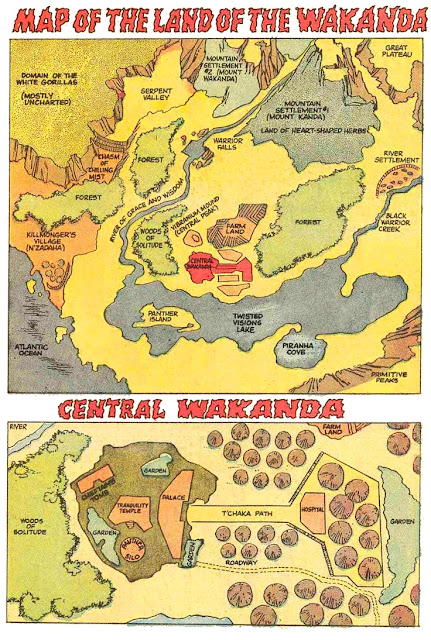

Localidade
Se você se lembrar das primeiras cenas de Pantera Negra, é possível ver a localização do país, baseado no local de impacto do meteoro que resultou no surgimento do metal vibranium. Mas se você não é muito bom em geografia, vamos ajudar.
Se Wakanda fosse uma nação real, ela estaria localizada em uma área que fica no noroeste do Quênia, que fica na divisa com a Etiópia, Sudão do Sul e Uganda, às margens do Lago Turkana.
A Marvel pode ter escolhido esse local, conhecido como Triângulo de Ilemi, para retratar Wakanda nos filmes por uma simples questão: ele é motivo de disputa entre o Quênia e o Sudão do Sul. Por mais que esteja, de fato, sobre o controle dos quenianos, a área nunca foi reivindicada oficialmente pelo país, que até chegou a afirmar que o território era sudanês (o Sudão do Sul só foi criado em 2011) em tratados assinados em 1902, 1907 e 1972.
Só existe uma inconsistência nessa questão: a maior parte da área é um deserto na vida real. Enquanto que no filme, Wakanda foi retratada como uma nação com uma vasta vegetação e diversas florestas.
Mas saiba que, no fundo, a localização de Wakanda já havia sido indicada anteriormente no UCM. Isso ocorreu ainda em Homem de Ferro 2. Enquanto Tony Stark conversava como Nick Fury sobre a Iniciativa Vingadores, foi possível ver, ao fundo, um mapa indicando o local exato de Wakanda.
O mais legal de tudo é que nos quadrinhos, a misteriosa Wakanda já mudou de lugar também. E olha que foi muito mais evidente essa alteração. Em um dos primeiros mapas que foi feito de Wakanda na fase do Jungle Action colocava o país como tendo saída pra o Oceano Atlântico:
Para mais informações acesse: https://www.marvel616.com/2018/02/marvel-revela-novo-lugar-onde-estaria.html